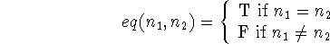

In Reference 7 we develop the recursive functions of a class of symbolic expressions in terms of the conditional expression and recursive function formalism.
As an example of the use of recursive function definitions, we
shall give recursive definitions of a number of functions over the
integers. We do this for three reasons: to help the reader familiarize
himself with recursive definition, to show how much simpler in
practice our methods of recursive definition are than either Turing
machines or Kleene's formalism, and to prove that any partial
recursive function (Kleene) on the non-negative integers is in  where
where  contains only the successor function and the predicate
equality.
contains only the successor function and the predicate
equality.
Let I be the set of non-negative integers {0,1,2,...} and denote the successor of an integer n by n' and denote the equality of integers and by . If we define functions succ and eq by

then we write  = . We are interested in
= . We are interested in  . Clearly all functions
in
. Clearly all functions
in  will have either integers or truth values as values.
will have either integers or truth values as values.
First we define the predecessor function pred(not defined for n = 0) by
We shall denote pred(n) by
Now we define the sum
the product
the difference
which is defined only for The inequality predicate is defined by
The strict inequality m < n is defined by
The integer valued quotient m/n is defined by
The remainder on dividing m by n is defined by
and the divisibility of a number n by a number m,
The primeness of a number is defined by
where
The Euclidean algorithm defines the greatest common divisor, and we write
and we can define Euler's -function by

where
is the number of numbers less than n and relatively prime to n.
The above shows that our form of recursion is a convenient way of
defining arithmetical functions. We shall see how some of the
properties of the arithmetical functions can conveniently be derived
in this formalism in a later section.